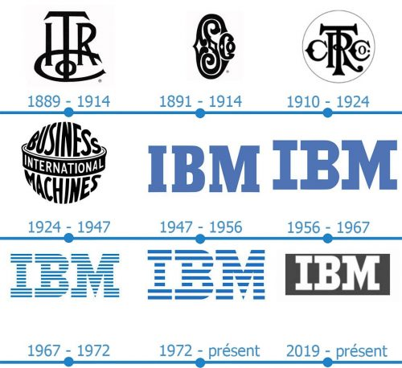
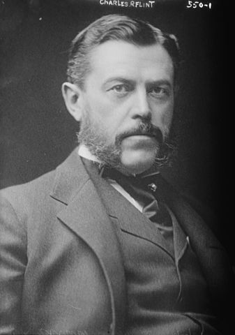

Les 4 entreprises étudié ; IBM.
|  |
Les « IBMers » : c'est ainsi que se définissent, un peu partout dans le monde, les salariés du géant informatique. Une communauté un peu particulière, empreints d'une culture d'entreprise très prononcée. |
|---|
Avec un chiffre d’affaires mondial de 22,089 milliards de $ et 21 % de parts de marché en 2008, la branche logicielle d’IBM (IBM Software Group) est le premier fournisseur de solutions logicielles d’infrastructure.
La branche logicielle d’IBM dans le monde, c’est :
50 000 professionnels, dont 26 000 développeurs, 17 000 ingénieurs commerciaux et ingénieurs avant-vente.
- Une part de 40 % des 5 896 brevets déposés par IBM aux États-Unis en 2010.
- Un total de 80 laboratoires de R&D et de plus de 40 centres d'innovation,
- Une représentation dans plus de 170 pays.
- Un écosystème de plus de 100 000 partenaires.
Depuis sa création en 1995, IBM Software Group construit une gamme complète de logiciels d’infrastructure ouverts, évolutifs, interconnectables et adaptés aux problématiques sectorielles. IBM a une très bonne réputation et est considéré aux yeux de tous comme une très grosse et influente entreprise dans le monde.
|  |
Ici nous pouvons voir un des fondateurs de l’entreprise IBM Charle Ranlett. |
|---|